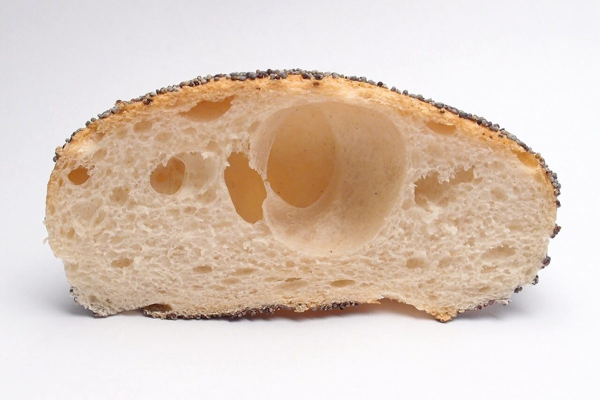

カフェ / 高知県土佐清水市
cafe たゆたう
カフェ「cafe たゆたう」のご案内ページです。営業時間やメニューなど、詳しいことは準備中。まずはInstagramをのぞいてみてください。
制作側の連想
五つのキーを、順に押していく
このサイトは、機械式レジスター(金銭登録機)の部位に見立てて組んでみました。キー、表示窓、引き出し、レシート窓、ベル。五つのページをK1からK5の「キー」として並べ、いま見ているページのキーだけが押し込まれた状態になります。制作側の連想で、お店の理念・由来とは無関係です。
K1 キー
最初の一枚。


写真はパンのイメージです。お店で提供している商品を示すものではありません。
K1 → K2
白い背景から、豆の山へ。


写真はパンとコーヒー豆のイメージです。お店のものではありません。
ギャラリー(イメージ)
黒と白の背景で。


ご案内
お店のこと(確認できたものだけ)
| 所在地 | 〒787-0242 高知県土佐清水市下ノ加江１８３８−６ |
|---|---|
| 電話 | 0880-84-0701 |
| 営業時間 | 準備中 |
| 定休日 | 準備中 |
| ご予約 | 準備中 |
| 駐車場 | 準備中 |
| SNS | Instagram @cafetayutau |